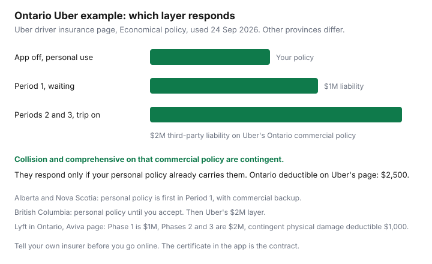

Insurance · Canada
Rideshare Insurance in Canada: Personal Policy Gaps When You Drive for Uber or Lyft
A personal auto policy is priced for commuting, errands, and pleasure. Driving people for a fare is a different use. Platforms buy a commercial policy that turns on and off with the app. The gap households fall into is the minute the app is on, or the minute it is off and the personal policy still thinks the car is a family car. This page is that split, using the certificates Uber and Lyft publish in Canada, and the notice you owe your own insurer before the first trip. What a passenger pays for a night out is a Transportation question. It is linked, not repeated. If you are in a crash, the collision checklist is the scene work. This page is whether a policy answers at all.
Disclosure: Broker quote portals are an offer type if your current insurer will not continue the policy once rideshare use is disclosed. Saving Optimizer may earn a commission if those links are added later. We do not claim a partnership with any brokerage, with Uber, with Lyft, or with Economical, Aviva, or any other platform insurer. Education only. Figures below are from the companies’ own pages, read 24 Sep 2026. The certificate in the driver app controls.
Key takeaways
- App off is your personal policy. App on is a commercial layer, and the limits change when you accept a trip. Uber and Lyft do not use identical numbers.
- In Ontario, FSRA lists approved rideshare policies, including Uber with Economical and Lyft with Aviva. Coverage runs from app on until the passenger gets out. App off returns you to the personal policy.
- Contingent collision pays for your car only if the personal policy already has collision and comprehensive. Uber’s Ontario page shows a $2,500 deductible on that layer. Aviva’s Lyft page shows $1,000.
- Tell your insurer before you go online. A livery exclusion, or a pleasure-use answer that is no longer true, is how a personal claim is denied. There is no national dollar amount for the premium change.
- When you stop, remove the endorsement or business-use class and read the next declarations page. Leaving it on is how you keep paying.
Period 0/1/2 coverage: personal vs platform commercial layers
Drivers talk about periods. The labels are not the same on every app, so match the words to the moment, not to a screenshot from another country.
- Period 0, or offline. The app is off. You are driving to work, to a grocery store, or home. Uber’s Canada page says your personal policy applies, and that the personal policy must be in force for you to drive with Uber. Aviva’s Lyft page calls this Phase 0 and says the same thing. FSRA’s Ontario consumer page says that when the app is turned off, the vehicle owner’s personal auto policy applies.
- Period 1. You are logged in and available, and you have not accepted a request. This is the period personal policies are most likely to exclude, and the period commercial policies treat differently by province.
- Period 2, and the passenger-aboard period many apps call Period 3. You have accepted a request, you are driving to the pickup, and then the passenger is in the car until they get out. Uber groups Periods 2 and 3 together for limits. Lyft splits Phase 2 (en route) and Phase 3 (passenger aboard) and, on Aviva’s Ontario page, gives them the same higher limit.
FSRA, on its rideshare page used 24 Sep 2026, says it has approved products for named platforms only, and that drivers, passengers, and vehicle owners are covered from the moment the app is turned on until passengers exit. The approved names include Uber (Economical Mutual Insurance Company) and Lyft (Aviva Insurance Company of Canada), plus other platforms with their own insurers. A platform that is not on that list is not covered by this sentence. Uber Black is a separate case: Uber’s page says Black and SUV drivers must carry their own commercial insurance, and Uber does not maintain that cover.
| Where | Waiting, app on | Trip accepted through drop-off |
|---|---|---|
| Uber, Ontario | $1,000,000 third-party liability. Contingent collision and comprehensive if your personal policy has them, $2,500 deductible. | $2,000,000 third-party liability. Same contingent physical damage and $2,500 deductible. |
| Lyft, Ontario (Aviva) | $1,000,000 third-party liability. Contingent collision and comprehensive if your personal policy has them, $1,000 deductible. | $2,000,000 third-party liability. Same contingent physical damage and $1,000 deductible. Lyft’s help centre says this commercial policy is available in Ontario. |
| Uber, Alberta | Personal coverage applies first. Uber describes $1,000,000 third-party liability and standard accident benefits as backup. | $2,000,000 third-party liability, standard accident benefits, collision and comprehensive with a $2,500 deductible, as Uber’s Alberta section states it. |
| Uber, British Columbia | Uber says your personal auto insurance applies while the app is on and before you accept. | After you accept, Uber’s policy: $2,000,000 third-party liability and contingent physical damage with a $2,500 deductible. |
| Uber, Quebec | $1,000,000 civil liability. Contingent collision and upset, and other-than-collision cover, subject to the deductible and only if the personal policy has the underlying cover. | The same $1,000,000 civil liability and the same contingent physical-damage wording. Quebec does not jump to the $2,000,000 Ontario figure. |
| Uber, Saskatchewan | SGI basic plate insurance continues. Uber says you do not retitle the personal policy for basic cover. | From accept until the trip ends or is cancelled, SGI basic is not excluded, because Uber pays an extra premium. Uber’s additional liability applies above the $200,000 that comes with the basic plate, up to $2,000,000. An Auto Pak package does not apply during rideshare. It still applies when you are not engaged. |
Nova Scotia and Newfoundland and Labrador follow the Alberta pattern on Uber’s page: personal coverage first while you are only available, with commercial backup at $1,000,000, then $2,000,000 after you accept, and contingent collision only if the personal policy has it, at a $2,500 deductible. If your province is not in the table, open the certificate in the app before you go online. Do not borrow Ontario’s $2,000,000.

Why a standard personal auto policy may exclude livery/rideshare use
Personal policies are underwritten for a private passenger car. Carrying passengers for compensation, sometimes called livery, public conveyance, or rideshare, is a use many of those policies exclude or leave off the application. The commercial policy exists because of that gap. It does not fill every minute.
- App off, exclusion still in force. If you never told the insurer, a crash on a Saturday with the app closed can still be investigated once a claims note shows the car is a rideshare vehicle. The remedy is disclosure, not a story that the app was off.
- Period 1 in provinces where personal insurance is primary. Uber’s Alberta, Nova Scotia, Newfoundland and Labrador, and British Columbia sections put the personal policy first while you are available and have not accepted. If that personal policy excludes the use, the “backup” commercial wording is what you have left, and only to the extent the certificate actually backs up. Read it. Do not assume backup means the same collision deductible you have at home.
- A household car. The policy is usually in a spouse’s or a parent’s name. The occasional-driver rules on the young-driver guide are a different problem. Rideshare by a listed driver the insurer does not know about is a use problem. The principal operator and the use both have to be true. The multi-car guide already flags delivery and rideshare as a class that can remove a discount.
Passenger rideshare, the kind you order for a night out, is not this coverage. The nights-out guide compares fares with transit. It does not insure the driver.
Endorsements and insurer notification requirements before you go online
Do this before the first online session, not after the first claim.
- Tell the broker or the direct insurer, in writing, that you will drive for a named platform, in which province, and roughly how many hours or kilometres. Uber’s driver page says you are responsible for that notice so the personal policy is the one you need. Aviva’s Lyft page says the commercial policy attaches automatically for Lyft drivers, and that you still inform your representative so the personal policy allows the use. Lyft’s Ontario help text says drivers in Windsor or Toronto must tell their insurer the vehicle is used for a transportation-network company.
- Ask whether this insurer will keep the car, and whether it wants a rideshare endorsement, a business-use class, or a statement that the commercial policy is the app-on cover. There is no single national endorsement number. The answer is a declarations page, not a forum thread.
- If the insurer declines the use, shop one other market before you drive. Broker and direct shopping, on identical facts, is the broker-versus-direct guide. A portal is a way to ask. It is not a promise that a standard personal policy will say yes.
- Keep collision and comprehensive on the personal policy if you want the platform’s contingent physical damage. That link is the next section. Dropping collision to save money can also drop the commercial collision, depending on the certificate.
- Match the province. Lyft’s help centre says its commercial policy is currently available in Ontario. Driving a car insured and garaged in another province, on an Ontario-only commercial certificate, is a question for that certificate, not an assumption.
FSRA’s list is the Ontario regulatory map of which platform insurer is approved. It is not a personal endorsement you can skip. The personal policy still has to be valid when the app is off, and it still has to be the underlying policy the commercial form requires.
Collision/comprehensive: whose policy responds in each period
Liability and accident benefits are the part platforms advertise. The car itself is the part drivers misunderstand.
- App off. Your collision and comprehensive, if you bought them, with your deductible. If you did not buy them, a parking-lot dent with the app closed is yours.
- App on, Ontario Uber and Ontario Lyft. Physical damage is contingent. Uber’s page: contingent collision and comprehensive only for drivers who carry that coverage on the personal policy, $2,500 deductible. Aviva’s Lyft page: the same condition, $1,000 deductible. You do not get to pick the personal deductible during those phases. You get the commercial deductible the page states.
- British Columbia, after accept. Uber describes contingent physical damage with a $2,500 deductible. Before accept, Uber says the personal policy applies, including while the app is on.
- Saskatchewan, during a trip. Uber says an Auto Pak you bought to lower a deductible or to get replacement cost does not apply while you are engaged in rideshare. Basic plate insurance still applies. The package returns when you are not engaged.
- Quebec. Contingent collision and upset, and all perils other than collision, with the deductible on the certificate, and only with underlying personal coverage. Variable limits, in Uber’s own words.
A Northbridge Ontario rideshare form filed for platforms FSRA lists with that insurer, including the 2026–27 certificate structure, splits a pre-acceptance period and a post-acceptance period and makes all-perils, collision, comprehensive, and specified perils conditional on the same coverage being in force on the owner’s personal Ontario policy. If you drive for one of those platforms, use that platform’s certificate. Do not paste Uber’s $2,500 onto it.
After a crash, open the claim in the app and with your personal insurer, and say which period you were in. The collision checklist covers police thresholds and injury clocks. Name the period in the first sentence so the file is not opened on the wrong policy.
Tax and commercial-use disclosure side effects on personal rates
Disclosure changes the premium because it changes the use. It can also sit next to tax paperwork. Neither one is a reason to stay silent with the insurer.
- The premium. A car rated as pleasure or as a short commute can be re-rated when the use becomes rideshare. Ask for the dollar difference in writing before you accept it. There is no Canada-wide percentage. A multi-vehicle discount that assumed two pleasure cars can shrink. That interaction is on the multi-car guide.
- Kilometres. The annual figure on the personal policy is the car’s figure. Kilometres driven with the app on still happened. Cutting them out of the answer, because a platform “covered those trips,” misstates the exposure. The mileage guide is how to document a number you can stand behind.
- Tax, at a distance. Rideshare income is business income. The GST/HST small-supplier threshold is a CRA rule, generally $30,000 of taxable supplies in one calendar quarter or over four consecutive calendar quarters. Lyft’s Ontario driver page lists an HST account number among onboarding documents. That list is Lyft’s. It is not a determination that you have crossed the threshold. Confirm registration with CRA or a tax preparer. This page is not a deduction recipe, and an insurance endorsement is not a business expense you invent.
A higher personal premium can still be the correct price. The incorrect price is a pleasure-use policy that will not answer, beside a commercial policy that only answers when the app is on and the underlying collision is in force.
If you stop ridesharing: remove the endorsement so you stop overpaying
Stopping is a policy change, not a mood. The week you deactivate the driver account:
- Email the insurer: the date you stopped, the platform, and a request to remove any rideshare endorsement, business-use class, or extra liability you added only for the app.
- Ask for a new declarations page and read the use, the kilometres, and the price. A verbal “we’ll take it off at renewal” can mean months of the higher rate.
- Confirm you have no open trip and no open claim that still needs the commercial certificate. Contingent collision that depended on personal collision is a claims condition for losses that already happened. Do not drop personal collision the same afternoon if a claim from last week is unresolved. The deductible decision for a car you simply own, with no app, is the mileage and deductible guide, made on a quiet day.
- If a household member might still open the app, the endorsement stays until they stop too. One driver deactivating does not change a car the other driver still uses for trips.
Put a reminder on the renewal 45 days out, in the same sitting as the annual review. Rideshare use is a fact that goes stale. So is the endorsement you forgot to remove.
Sources & date stamps
- Uber, driver insurance in Canada — offline versus Periods 1, 2, and 3; Ontario, Quebec, Alberta, British Columbia, Saskatchewan, Nova Scotia, and Newfoundland and Labrador sections; contingent collision; Uber Black excluded. Page used 24 Sep 2026.
- Aviva, Lyft ridesharing in Ontario — Phase 0 personal; Phase 1 $1,000,000; Phases 2 and 3 $2,000,000; contingent physical damage $1,000 deductible. Page used 24 Sep 2026.
- Lyft Help, Ontario insurance policy — commercial policy described as available in Ontario; Windsor and Toronto drivers must tell their insurer about transportation-network use. Used 24 Sep 2026.
- FSRA, ridesharing, carsharing and auto insurance in Ontario — approved platforms and insurers, including Uber with Economical and Lyft with Aviva; app-on cover until passengers exit; personal policy when the app is off. Used 24 Sep 2026.
- Northbridge Ontario rideshare certificate structure for 2026–27: pre-acceptance and post-acceptance liability, with physical damage conditional on the same coverage remaining in force on the personal policy. Match the certificate to the platform FSRA names.
Frequently asked questions
Does my personal auto policy cover me while the Uber app is on?
Often it does not, once you are carrying passengers for compensation or available to do so. Uber’s own page says the personal policy applies when you are using the car for personal use, and that you must tell your insurer before you drive. In Ontario, FSRA says an approved rideshare policy covers the app-on period, and the personal policy applies when the app is off. Alberta, Nova Scotia, and British Columbia still put the personal policy first during part of the waiting period. Read your certificate.
What are Uber’s Ontario limits?
On Uber’s Canada driver-insurance page, read 24 Sep 2026, the Economical commercial policy in Ontario shows $1,000,000 third-party liability in Period 1 and $2,000,000 in Periods 2 and 3, plus standard accident benefits. Contingent collision and comprehensive, with a $2,500 deductible, apply only if your personal policy already has those coverages.
Is Lyft the same as Uber?
No. FSRA lists Lyft’s Ontario policy with Aviva. Aviva’s Lyft page shows Phase 0 on your personal policy, $1,000,000 liability in Phase 1, and $2,000,000 in Phases 2 and 3. Contingent collision and comprehensive use a $1,000 deductible and only if you carry those coverages personally. Lyft’s help centre says that commercial policy is available in Ontario.
What if I stop driving for the app?
Tell your insurer, remove any rideshare endorsement or business-use class you added only for the app, and check the next declarations page. Leaving the endorsement on means you keep paying for a use you dropped. Deactivate the driver account so you are not still shown as available.
Is this brokerage advice?
No. Education only. Broker quote portals are an offer type if your current insurer will not keep the car once you disclose rideshare. We do not claim a partnership with any brokerage, with Uber, with Lyft, or with their insurers.